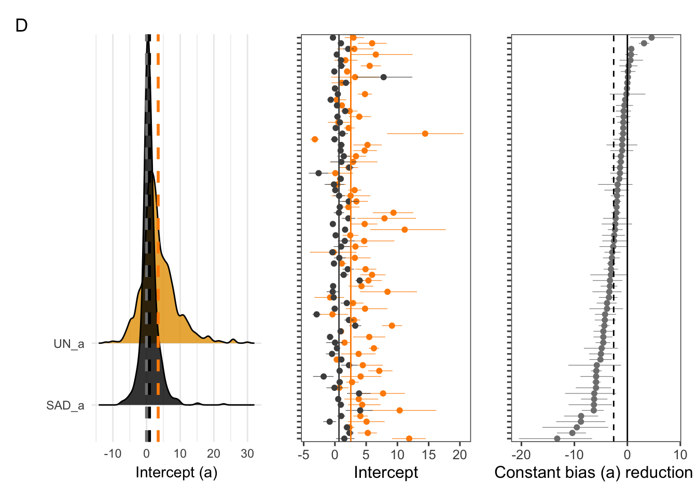
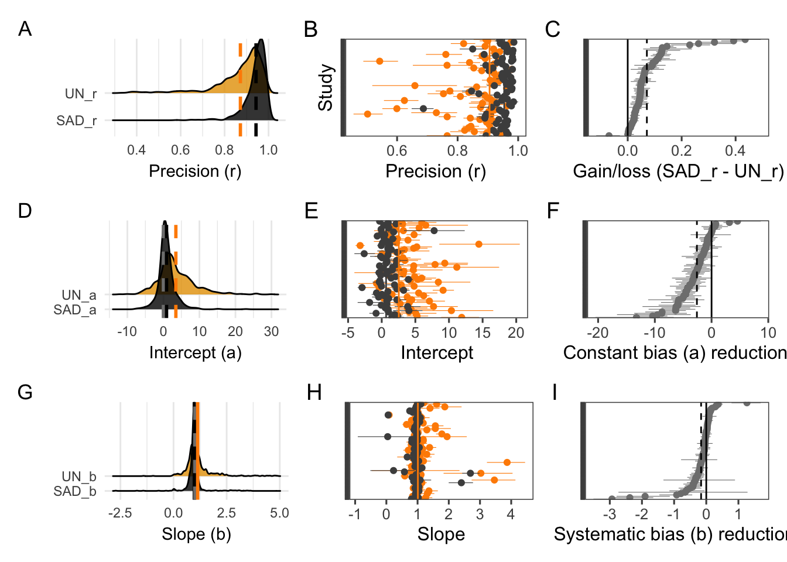
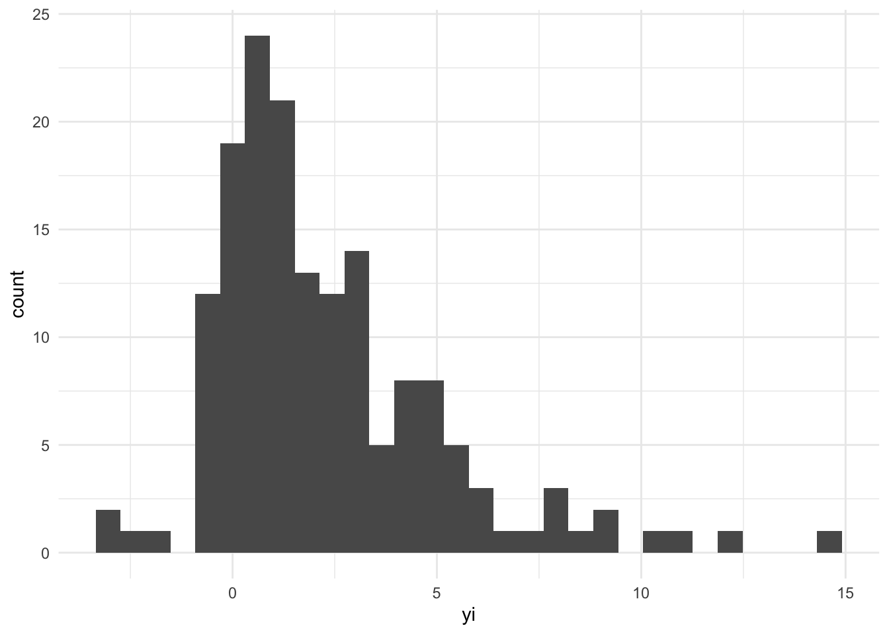

library(tidyverse)
library(lme4)
library(ggthemes)
library(gsheet)
library(cowplot)
library(viridis)
library(lattice)
library(car)
library(janitor)
library(ggridges)
theme_set(theme_minimal())Data import
sad <- gsheet2tbl("https://docs.google.com/spreadsheets/d/1oBa_OIko04157D0-Z0tV7dN8BJxq9fAjEfbOkoSKy5s/edit?usp=sharing", sheetid = "all-data")Total number of articles
sad %>%
group_by(study) %>%
summarize(n()) %>%
nrow()## [1] 153sad %>%
group_by(study) %>%
filter(Symptom_code != "NA") %>%
slice(1) %>%
tabyl(lesion_number) %>%
arrange(-n)sad %>%
group_by(study) %>%
slice(1) %>%
filter(Symptom_code != "NA") %>%
tabyl(lesion_number, Symptom_code) %>%
pivot_longer(2:10, names_to = "code",
values_to = "value") %>%
filter(value > 0)Article selection
We will use only studies that evaluated unaided and aided estimates.
sad %>%
group_by(study) %>%
filter(validation == "Unaided_aided") %>%
summarize(n())Now we select only those studies
sad_all <- sad %>%
filter(validation == "Unaided_aided") %>%
filter(!is.na(coefs)) %>%
filter(coefs != "R2") %>%
filter(coefs != "R2_CCC") %>%
filter(coefs != "R2_b")Let’s check now the number of studies again.
sad_all %>%
group_by(study) %>%
summarize(n()) %>%
nrow()## [1] 93Transform variables
We need to do some corrections in the data and rename some variables
# Obtain the Pearson's r from r-squared
sad_all <- sad_all %>%
mutate(UN_r = sqrt(unaided_R2)) %>%
mutate(SAD_r = sqrt(aided_R2)) Number of raters per study
sad_all %>%
group_by(study, pub_year) %>%
tabyl(study) %>%
arrange(n) We want to remove studies with less than 5 raters to obtain better estimate
# remove studies with less than 6 raters
sad_all <- sad_all %>%
filter(study != 119,
study != 127,
study != 132,
study != 147,
study != 148,
study != 152,
study != 149,
study != 150,
study != 153,
study != 46,
study != 49,
study != 33,
study != 146,
study != 67,
study != 100
)
sad_all %>%
group_by(study) %>%
summarize(n()) %>%
nrow()## [1] 78Studies per organ
sad_all %>%
group_by(study, organ) %>%
arrange(rater_id) %>%
slice(1) %>%
tabyl(organ)sad_all <- sad_all %>%
mutate(organ2 = case_when(organ == "Leaf" ~ "Leaf",
TRUE ~ "Other"))Studies per pathogen
sad_all %>%
group_by(study, pathogen_group) %>%
arrange(rater_id) %>%
slice(1) %>%
tabyl(pathogen_group) %>%
arrange(-n)Studies by diagram type
sad_all %>%
group_by(study, diag_type) %>%
arrange(rater_id) %>%
slice(1) %>%
tabyl(diag_type) %>%
arrange(-n)sad_all <- sad_all %>%
mutate(diag_type2 = case_when(diag_type == "Drawing" ~ "Drawing",
TRUE ~ "Photo"))Studies by number of diagrams
sad_all %>%
group_by(study, n_diagrams) %>%
arrange(rater_id) %>%
slice(1) %>%
tabyl(n_diagrams) %>%
arrange(n_diagrams)Create a category for studies with 1 to 7 diagrams or 8 to 12 diagrams
sad_all <- sad_all %>%
mutate(n_diagram2 = case_when(n_diagrams < 8 ~ "1-7D",
TRUE ~ "8-12D"))
sad_all %>%
group_by(study, n_diagram2) %>%
arrange(rater_id) %>%
slice(1) %>%
tabyl(n_diagram2)Regression statistics
Remove outliers
We want to remove raters that are outliers using the criteria below
Number of raters including outliers
nrow(sad_all)## [1] 923sad_all2 <- sad_all %>%
filter(UN_r > 0.3) %>%
filter(SAD_r > 0.3) %>%
filter(UN_a < 30) %>%
filter(UN_a > -30) %>%
filter(SAD_a < 30) %>%
filter(SAD_a > -30) %>%
filter(UN_b < 5) %>%
filter(UN_b > -5) %>%
filter(SAD_b < 5) %>%
filter(SAD_b > -5) %>%
mutate(gain_r = SAD_r - UN_r) %>%
mutate(gain_a = SAD_a - UN_a) %>%
mutate(gain_b = SAD_b - UN_b)
# number of raters after outlier removal
nrow(sad_all2)## [1] 848# Number of raters removed
nrow(sad_all)-nrow(sad_all2)## [1] 75# Percentage of outliers
(nrow(sad_all)-nrow(sad_all2))/nrow(sad_all)*100## [1] 8.125677# Check now number of raters per study
sad_all2 %>% group_by(study, pub_year) %>%
tabyl(study) %>%
arrange(n) Let’s remove again studies with less than 6 raters
sad_all2 %>%
group_by(study, pub_year) %>%
tabyl(study) %>%
arrange(n) sad_all2 <- sad_all2 %>%
filter(study != 79,
study != 97,
study != 35,
study != 62,
study != 70 ,
study != 103,
)
nrow(sad_all2)## [1] 823# Number of studies
sad_all2 %>% group_by(study, pub_year) %>%
tabyl(study) %>%
arrange(n) %>%
count()# write selected
sad_all2 %>%
tabyl(study) %>%
arrange(study) %>%
write_csv("selected_final.csv")Exploratory plots
Precision
p1_precision <- sad_all2 %>%
select(study, rater_id, SAD_r, UN_r) %>%
gather(stats, value, 3:4) %>%
ggplot(aes(value, stats, fill = stats))+
geom_density_ridges(scale = 3, alpha = 0.8)+
geom_vline(xintercept = mean(sad_all2$UN_r), linetype =2, size=1, color = "darkorange")+
theme(legend.position = "none")+
theme_minimal()+
geom_vline(xintercept = mean(sad_all2$SAD_r), linetype =2, size=1, color = "black")+ theme(legend.position = "none")+
scale_fill_colorblind()+
labs(y = "", x ="Precision (r)")p2_precision <- sad_all2 %>%
select(study, rater_id, gain_r) %>%
ggplot(aes(gain_r, fill = "gain_r"))+
geom_density(alpha = 0.7)+
geom_vline(xintercept = mean(sad_all2$gain_r), linetype =2, size=1, color = "darkorange")+ theme(legend.position = "none")+
labs(x = "Gain in precision (r)")+
scale_fill_colorblind()p3_precision <- sad_all2%>%
ggplot()+
theme_few()+
#geom_jitter(width =0.1, color = "gray90")+
coord_flip()+
stat_summary(aes(factor(study), UN_r), fun.data = "mean_cl_boot", colour = "darkorange", size = 0.2)+
stat_summary(aes(factor(study), SAD_r), fun.data = "mean_cl_boot", colour = "grey30", size = 0.2)+
geom_hline(yintercept = median(sad_all2$UN_r), linetype =1, size=0.5, color = "darkorange")+
geom_hline(yintercept = median(sad_all2$SAD_r), linetype =1, size=0.5, color = "grey30")+
theme(axis.text.y=element_blank())+
labs(x = "Study", y = "Precision (r)")p4_precision <- sad_all2 %>%
ggplot()+
theme_few()+
#geom_jitter(width =0.1, color = "gray90")+
coord_flip()+
stat_summary(aes(reorder(factor(study), gain_r), gain_r), fun.data = "mean_cl_boot", colour = "grey50", size = 0.2)+
geom_hline(yintercept = mean(sad_all2$gain_r), linetype =2, size=0.5)+
geom_hline(yintercept = 0, linetype =1, size=0.5)+
labs(x = "", y = "Gain/loss (SAD_r - UN_r)")+
theme(axis.text.y=element_blank())library(patchwork)##
## Attaching package: 'patchwork'## The following object is masked from 'package:cowplot':
##
## align_plots(p1_precision | p3_precision | p4_precision)+
plot_annotation(tag_levels = 'A')## Picking joint bandwidth of 0.0135 ggsave("figs/P1_precision.png", width =8, height =3)## Picking joint bandwidth of 0.0135Intercept
p2_accuracy1 <- sad_all2 %>%
select(study, rater_id, SAD_a, UN_a) %>%
gather(stats, value, 3:4) %>%
ggplot(aes(value, stats, fill = stats))+
geom_density_ridges(scale = 6, alpha = 0.8)+
scale_fill_colorblind()+
labs(y = "", x = "Intercept (a)")+
geom_vline(xintercept = 0, color = "gray50", linetype =2, size=1)+
theme(legend.position = "none")+
geom_vline(xintercept = mean(sad_all2$SAD_a), linetype =2, size=1, color = "black")+
geom_vline(xintercept = mean(sad_all2$UN_a), linetype =2, size=1, color = "darkorange")p2_accuracy2 <- sad_all2 %>%
ggplot()+
theme_few()+
coord_flip()+
stat_summary(aes(factor(study), UN_a), fun.data = "mean_cl_boot", colour = "darkorange", size = 0.2)+
stat_summary(aes(factor(study), SAD_a), fun.data = "mean_cl_boot", colour = "grey30", size = 0.2)+
geom_hline(yintercept = median(sad_all2$SAD_a, na.rm = TRUE), linetype =1, size=0.5, color = "grey30")+
geom_hline(yintercept = median(sad_all2$UN_a, na.rm = TRUE), linetype =1, size=0.5, color = "darkorange")+
labs(y = "Intercept", x = "")+
theme(axis.text.y=element_blank())p2_accuracy3 <- sad_all2 %>%
ggplot()+
theme_few()+
#geom_jitter(width =0.1, color = "gray90")+
coord_flip()+
stat_summary(aes(reorder(factor(study), gain_a), gain_a), fun.data = "mean_cl_boot", colour = "grey50", size = 0.2)+
geom_hline(yintercept = mean(sad_all2$gain_a, na.rm = TRUE), linetype =2, size=0.5)+
geom_hline(yintercept = 0, linetype =1, size=0.5)+
labs(x = "", y = "Constant bias (a) reduction ")+
theme(axis.text.y=element_blank())plot_grid(p2_accuracy1,
p2_accuracy2,
p2_accuracy3,
ncol =3, align = "vh")## Picking joint bandwidth of 0.645 ggsave("figs/P1_accuracy_a.png", width =8, height =3)
(p2_accuracy1 | p2_accuracy2 | p2_accuracy3)+
plot_annotation(tag_levels = list('D','E', 'F'))## Picking joint bandwidth of 0.645
ggsave("figs/P1_accuracy_a.png", width =8, height =3)## Picking joint bandwidth of 0.645Slope
p3_accuracy1 <- sad_all2 %>%
select(study, rater_id, SAD_b, UN_b) %>%
gather(stats, value, 3:4) %>%
ggplot(aes(value, stats, fill = stats))+
geom_density_ridges(scale = 6, alpha = 0.8)+
scale_fill_colorblind()+
labs(y = "", x = "Slope (b)")+
theme(legend.position = "none")+
geom_vline(xintercept = mean(sad_all2$SAD_b), linetype =1, size=1, color = "black")+
geom_vline(xintercept = 1, color = "gray50", linetype =2, size=1)+
geom_vline(xintercept = mean(sad_all2$UN_b), linetype =1, size=1, color = "darkorange")p3_accuracy2 <- sad_all2 %>%
ggplot()+
theme_few()+
coord_flip()+
stat_summary(aes(factor(study), UN_b), fun.data = "mean_cl_boot", colour = "darkorange", size = 0.2)+
stat_summary(aes(factor(study), SAD_b), fun.data = "mean_cl_boot", colour = "grey30", size = 0.2)+
geom_hline(yintercept = median(sad_all2$SAD_b, na.rm = TRUE), linetype =1, size=0.5, color = "grey30")+
geom_hline(yintercept = median(sad_all2$UN_b, na.rm = TRUE), linetype =1, size=0.5, color = "darkorange")+
labs(y = "Slope", x = "")+
theme(axis.text.y=element_blank())p3_accuracy3 <- sad_all2 %>%
ggplot()+
theme_few()+
#geom_jitter(width =0.1, color = "gray90")+
coord_flip()+
stat_summary(aes(reorder(factor(study), gain_b), gain_b), fun.data = "mean_cl_boot", colour = "grey50", size = 0.2)+
geom_hline(yintercept = mean(sad_all2$gain_b, na.rm = TRUE), linetype =2, size=0.5)+
geom_hline(yintercept = 0, linetype =1, size=0.5)+
labs(x = "", y = "Systematic bias (b) reduction ")+
theme(axis.text.y=element_blank())plot_grid(p3_accuracy1,
p3_accuracy2,
p3_accuracy3,
ncol =3, align = "vh")## Picking joint bandwidth of 0.0439 ggsave("figs/P3_accuracy_b.png", width =8, height =3)
p <- (p1_precision | p3_precision | p4_precision)/
(p2_accuracy1 | p2_accuracy2 | p2_accuracy3)/
(p3_accuracy1 | p3_accuracy2 | p3_accuracy3)
p + plot_annotation(tag_levels = 'A')## Picking joint bandwidth of 0.0135## Picking joint bandwidth of 0.645## Picking joint bandwidth of 0.0439
ggsave("figs/all_accuracy_precision.png", width =8, height =8)## Picking joint bandwidth of 0.0135## Picking joint bandwidth of 0.645## Picking joint bandwidth of 0.0439Random effects meta-analysis
Data preparation
dat_ma <- sad_all2 %>%
select(study, rater_id, organ2, n_diagram2, HB, pathogen_group, diag_type, col_type, lesion_number, min_sev, max_sev, n_diagrams, UN_r, SAD_r, UN_a, SAD_a, UN_b, SAD_b, Symptom_code2) %>%
mutate(rater_class = case_when(UN_r > 0.92 ~ "Good",
UN_r < 0.78 ~ "Poor",
TRUE ~ "Fair")) %>%
gather(stats, value, 13:18) %>%
mutate(value = as.numeric(value))
dat_ma2 <- dat_ma %>%
group_by(study,organ2, n_diagram2, HB, pathogen_group,
diag_type, col_type, lesion_number, min_sev,
max_sev, n_diagrams, stats, Symptom_code2) %>%
summarize(yi = mean(value),
vi = var(value),
n = n())## `summarise()` has grouped output by 'study', 'organ2', 'n_diagram2', 'HB', 'pathogen_group', 'diag_type', 'col_type', 'lesion_number', 'min_sev', 'max_sev', 'n_diagrams', 'stats'. You can override using the `.groups` argument.dat_ma2 <- dat_ma2 %>%
separate(stats, c("Method", "stat"), remove = FALSE) %>%
mutate(max_sev_class = case_when(
max_sev > 50 ~ "maxsev > 50%",
TRUE ~ "max_sev < 50%"
)) Correlation coefficient
dat_r2 <- dat_ma2 %>%
filter(stat == "r")
dat_r2 %>%
ggplot(aes(yi))+
geom_histogram()## `stat_bin()` using `bins = 30`. Pick better value with `binwidth`.library(metafor)## Loading 'metafor' package (version 2.4-0). For an overview
## and introduction to the package please type: help(metafor).##
## Attaching package: 'metafor'## The following object is masked from 'package:car':
##
## vifmeta_r <- rma.mv(yi, vi/n,
mods = ~Method,
random = list(~ Method | study),
struct = "UN",
method = "ML",
control = list(optimizer = "nlm"),
data = dat_r2
)
meta_r2 <- rma.mv(yi, vi/n,
mods = ~Method*Symptom_code2 ,
random = list(~ Method | study),
struct = "UN",
method = "ML",
control = list(optimizer = "nlm"),
data = dat_r2
)
anova(meta_r , meta_r2)##
## df AIC BIC AICc logLik LRT pval QE
## Full 11 -453.7601 -419.9332 -451.9764 237.8801 3942.8798
## Reduced 5 -448.8251 -433.4493 -448.4355 229.4126 16.9350 0.0095 5079.3077anova(meta_r2, btt = c(6,7,8))##
## Test of Moderators (coefficients 6:8):
## QM(df = 3) = 5.1403, p-val = 0.1618r <- tibble::tribble(
~method, ~mean, ~cil, ~ciu,
"SAD", 0.9430, 0.9339, 0.9522,
"UN", 0.8716, 0.8496, 0.8935
)
library(cowplot)
library(ggthemes)
rp <- r %>%
ggplot(aes(method, mean, color = method))+
geom_point()+
geom_errorbar(aes(ymin = cil, ymax = ciu), width =0.1)+
ylim(0.80, 1.05)+
theme_few()+
theme(legend.position = "none")+
scale_color_manual(values = c("grey30", "darkorange"))+
labs(y = "Pearson's r",
x = "")Intercept
dat_a <- dat_ma2 %>%
filter(stat == "a")
dat_a %>%
ggplot(aes(yi))+
geom_histogram()## `stat_bin()` using `bins = 30`. Pick better value with `binwidth`.
meta_a <- rma(yi, sqrt(vi),
mods = ~ Method -1 ,
data = dat_a, method = "ML")## Warning in rma(yi, sqrt(vi), mods = ~Method - 1, data = dat_a, method = "ML"):
## There are outcomes with non-positive sampling variances.## Warning in rma(yi, sqrt(vi), mods = ~Method - 1, data = dat_a, method = "ML"):
## Cannot compute QE-test, I^2, or H^2 when there are non-positive sampling
## variances in the data.meta_a2 <- rma.mv(yi, vi/n,
mods = ~Method-1,
random = list(~ Method | study),
struct = "UN",
method = "ML",
control = list(optimizer = "nlm"),
data = dat_a
)## Warning in rma.mv(yi, vi/n, mods = ~Method - 1, random = list(~Method | : There
## are outcomes with non-positive sampling variances.## Warning in rma.mv(yi, vi/n, mods = ~Method - 1, random = list(~Method | : 'V'
## appears to be not positive definite.a <- tibble::tribble(
~method, ~mean, ~cil, ~ciu,
"SAD", 0.7610, 0.4899, 1.0322,
"UN", 3.4173, 2.7880, 4.0465
)
ap <- a %>%
ggplot(aes(method, mean, color = method))+
geom_point()+
geom_errorbar(aes(ymin = cil, ymax = ciu), width =0.1)+
theme_few()+
geom_hline(yintercept = 0)+
theme(legend.position = "none")+
scale_color_manual(values = c("grey30", "darkorange"))+
labs(y = "Intercept" ,
x = "")+
ylim(-0.6, 4.5)Slope
dat_b <- dat_ma2 %>%
filter(stat == "b")
dat_b %>%
ggplot(aes(yi))+
geom_histogram()## `stat_bin()` using `bins = 30`. Pick better value with `binwidth`.meta_b <- rma(yi, sqrt(vi),
mods = ~ Method-1 ,
data = dat_b, method = "ML")
meta_b2 <- rma.mv(yi, vi/n,
mods = ~Method-1,
random = list(~ Method | study),
struct = "UN",
method = "ML",
control = list(optimizer = "nlm"),
data = dat_b
)
b <- tibble::tribble(
~method, ~mean, ~cil, ~ciu,
"SAD", 0.9665, 0.9147, 1.0183,
"UN", 1.0960, 1.0089, 1.1830
)
bp <- b %>%
ggplot(aes(method, mean, color = method))+
geom_point()+
geom_errorbar(aes(ymin = cil, ymax = ciu), width =0.1)+
theme_few()+
geom_hline(yintercept = 1)+
theme(legend.position = "none")+
scale_color_manual(values = c("grey30", "darkorange"))+
ylim(0.8, 1.2)+
labs(y = "Slope",
x = "")Plots
theme_set(theme_light())
x <- c(0:100)
y <- c(0:100)
dat <- data.frame(x,y)
UN_p1 <- dat %>%
ggplot(aes(x, y))+
coord_fixed()+
geom_point(color = "NA")+
geom_abline(intercept = 0, slope = 1, color="grey",
linetype="solid", size=1)+
geom_abline(intercept = 3.417, slope = 1.096, color="darkorange",
linetype="solid", size=1)+
geom_abline(intercept = 2.788, slope = 1.0089, color="darkorange",
linetype="dashed", size=1)+
geom_abline(intercept = 4.0465, slope = 1.1830, color="darkorange",
linetype="dashed", size=1)+
xlim(0,20)+
ylim(0,20)+
theme_few()+
labs(x ="Actual severity (%)",
y = "Estimate severity (%)",
title = "Unaided")SAD_p1 <- dat %>%
ggplot(aes(x, y))+
coord_fixed()+
geom_point(color = "NA")+
geom_abline(intercept = 0, slope = 1, color="grey",
linetype="solid", size=1)+
geom_abline(intercept = 0.7610, slope = 0.9665, color="grey30",
linetype="solid", size=1)+
geom_abline(intercept = 0.4899, slope = 0.9147, color="grey30",
linetype="dashed", size=1)+
geom_abline(intercept = 1.0322, slope = 1.0183, color="grey30",
linetype="dashed", size=1)+
theme_few()+
xlim(0,20)+
ylim(0,20)+
labs(x ="Actual severity (%)",
y = "Estimate severity (%)",
title = "SAD")multipanel
library(patchwork)
g1 <- (ap / bp / rp)
g2 <- (UN_p1 / SAD_p1)
(g1 | g2) + plot_annotation(tag_levels = 'A')## Warning: Removed 80 rows containing missing values (geom_point).
## Warning: Removed 80 rows containing missing values (geom_point). ggsave("figs/plot_all.png", width = 6,
height = 7)## Warning: Removed 80 rows containing missing values (geom_point).
## Warning: Removed 80 rows containing missing values (geom_point).Prepare for MCA
sad_mv <- sad_all2 %>%
group_by(study) %>%
summarize(mean_Ur = mean(UN_r),
var_Ur = sd(UN_r)^2,
mean_Ar = mean(SAD_r),
var_Ar = sd(SAD_r)^2,
mean_Ua = mean(UN_a),
var_Ua = sd(UN_a)^2,
mean_Aa = mean(SAD_a),
var_Aa = sd(SAD_a)^2,
mean_Ub = mean(UN_b),
var_Ub = sd(UN_b)^2,
mean_Ab = mean(SAD_b),
var_Ab = sd(SAD_b)^2
)
sad_mv <- left_join(sad_mv, sad_all2)## Joining, by = "study"Define categories
sad_mv <- sad_mv %>%
#select(organ2, diag_type2, n_diagram2, Kind_of_lesion, lesion_number, lesion_pattern, lesion_shape, coalesc, Kind_of_organ, max_sev_class) %>%
mutate(SAD_r = case_when(
mean_Ar > 0.92 ~"r > 0.92",
mean_Ar < 0.84 ~ "r < 0.84",
TRUE ~ "r 0.84 to 0.92"
) ) %>%
mutate(UN_r = case_when(
mean_Ur > 0.92 ~"r > 0.92",
mean_Ur < 0.84 ~ "r < 0.84",
TRUE ~ "r 0.84 to 0.92"
) ) %>%
mutate(SAD_a = case_when(
mean_Aa > 3.4 ~"a > 3.4",
TRUE < -3.4 ~"a < -3.4"
) ) %>%
mutate(UN_a = case_when(
mean_Ua > 3.4 ~"a > 3.4",
TRUE ~ " a < 3.4"
) ) %>%
mutate(SAD_b = case_when(
mean_Ab > 1 ~ "b > 1",
TRUE ~ "b < 1")) %>%
mutate(UN_b = case_when(
mean_Ub > 1 ~ "b > 1",
TRUE ~ "b < 1")) %>%
mutate(max_sev_class = case_when(
max_sev > 50 ~ "max_sev > 50%",
TRUE ~ "max_sev <= 50%")) UNAIDED ESTIMATES
library(FactoMineR)
sad_mv2 <- sad_mv %>%
group_by(study) %>%
slice(1)
sad_mv2 <- sad_mv2 %>%
filter(lesion_number != "Single")
attach(sad_mv2)
dat_mca2 <- data.frame(
sad_mv2$UN_a,
sad_mv2$UN_b,
sad_mv2$UN_r,
sad_mv2$Symptom_code2,
sad_mv2$max_sev_class,
sad_mv2$organ2
)
detach(sad_mv2)
cats <- apply(dat_mca2, 2, function(x) nlevels(as.factor(x))) # enumera as categorias
mca1 <- MCA(dat_mca2, graph = TRUE)res.mca <- MCA(dat_mca2, graph = FALSE)
library("factoextra")## Welcome! Want to learn more? See two factoextra-related books at https://goo.gl/ve3WBaeig.val <- get_eigenvalue(res.mca)
head(eig.val)## eigenvalue variance.percent cumulative.variance.percent
## Dim.1 0.3435362 25.765216 25.76522
## Dim.2 0.2439408 18.295561 44.06078
## Dim.3 0.2148261 16.111954 60.17273
## Dim.4 0.1657875 12.434062 72.60679
## Dim.5 0.1295238 9.714284 82.32108
## Dim.6 0.1024281 7.682110 90.00319fviz_screeplot(res.mca, addlabels = TRUE, ylim = c(0, 45))fviz_cos2(res.mca, choice = "var", axes = 1:2)
cont_dim1 <- fviz_contrib(res.mca, choice = "var", axes = 1, top = 15)
cont_dim2 <- fviz_contrib(res.mca, choice = "var", axes = 2, top = 15)
cont_dim12 <- fviz_contrib(res.mca, choice = "var", axes = 1:2, top = 15)
p <- fviz_mca_var(res.mca,
label = "var", repel = T,
col.var = "contrib",
ggtheme = theme_light()
)+ scale_color_continuous(low = "black", high = "#E69F00") +
theme(legend.position = "right")+
labs(color = expression(cos^{2}, title = ""))
p1 <- plot_grid(cont_dim1, cont_dim2, ncol = 1, align = "vh")
p0 <- plot_grid(p, labels = LETTERS, ncol =1, align = "vh", rel_widths = c(1.1, 0.8))
ggsave("figs/MCA_plot_unaided.png", width =6, height =5)Univariate exploratory
Effect of symptom code
library(ggthemes)
p1 <- sad_mv2 %>%
ggplot(aes(Symptom_code2, mean_Ur))+
geom_boxplot(outlier.colour = NA, fill = "darkorange", alpha = 0.8)+
geom_jitter(width = 0.1, alpha = 0.3)+
geom_hline(yintercept = 0.905, linetype = "dashed")+
labs(x = "",
y = "Pearson's r")+
theme_few()
p2 <- sad_mv2 %>%
ggplot(aes(Symptom_code2, mean_Ua))+
geom_boxplot(outlier.colour = NA, fill = "darkorange", alpha = 0.8)+
geom_jitter(width = 0.1, alpha = 0.3) +
geom_hline(yintercept = 0, linetype = "dashed")+
labs(x = "",
y = "Intercept")+
theme_few()
p3 <- sad_mv2 %>%
ggplot(aes(Symptom_code2, mean_Ub))+
geom_boxplot(outlier.colour = NA, fill = "darkorange", alpha = 0.8)+
geom_jitter(width = 0.1, alpha = 0.3) +
geom_hline(yintercept = 1, linetype = "dashed")+
labs(x = "",
y = "Slope")+
theme_few()
p01 <- (p1 | (p2 / p3))Effect of max_sev
p4 <- sad_mv2 %>%
ggplot(aes(max_sev_class, mean_Ur))+
geom_boxplot(outlier.colour = NA, fill = "darkorange", alpha = 0.8)+
geom_jitter(width = 0.1, alpha = 0.3)+
geom_hline(yintercept = 0.905, linetype = "dashed")+
labs(x = "",
y = "Pearson's r")+
theme_few()
p5 <- sad_mv2 %>%
ggplot(aes(max_sev_class, mean_Ua))+
geom_boxplot(outlier.colour = NA, fill = "darkorange", alpha = 0.8)+
geom_jitter(width = 0.1, alpha = 0.3) +
geom_hline(yintercept = 0, linetype = "dashed")+
labs(x = "",
y = "Intercept")+
theme_few()
p6 <- sad_mv2 %>%
ggplot(aes(max_sev_class, mean_Ub))+
geom_boxplot(outlier.colour = NA, fill = "darkorange", alpha = 0.8)+
geom_jitter(width = 0.1, alpha = 0.3) +
geom_hline(yintercept = 1, linetype = "dashed")+
labs(x = "",
y = "Slope")+
theme_few()
p02 <- (p4 | (p5 / p6))Effect of organ (leaf x other)
p7 <- sad_mv2 %>%
ggplot(aes(organ2, mean_Ur))+
geom_boxplot(outlier.colour = NA, fill = "darkorange", alpha = 0.8)+
geom_jitter(width = 0.1, alpha = 0.3)+
geom_hline(yintercept = 0.905, linetype = "dashed")+
labs(x = "",
y = "Pearson's r")+
theme_few()
p8 <- sad_mv2 %>%
ggplot(aes(organ2, mean_Ua))+
geom_boxplot(outlier.colour = NA, fill = "darkorange", alpha = 0.8)+
geom_jitter(width = 0.1, alpha = 0.3) +
geom_hline(yintercept = 0, linetype = "dashed")+
labs(x = "",
y = "Intercept")+
theme_few()
p9 <- sad_mv2 %>%
ggplot(aes(organ2, mean_Ub))+
geom_boxplot(outlier.colour = NA,fill = "darkorange", alpha = 0.8)+
geom_jitter(width = 0.1, alpha = 0.3) +
geom_hline(yintercept = 1, linetype = "dashed")+
labs(x = "",
y = "Slope")+
theme_few()
p03 <- (p7 | (p8 / p9))plots
(p01 / p02 ) + plot_annotation(tag_levels = 'A')ggsave("figs/boxplots_unaided.png", width = 6, height = 8)AIDED ESTIMATES
Univariate exploratory
Effect of inherent coefficients
p20 <- sad_mv2 %>%
ggplot(aes(mean_Ur, mean_Ar-mean_Ur, color = Symptom_code2))+
geom_point(size = 2, alpha = 0.7)+
#geom_smooth(method = "lm", se = F )+
geom_hline(yintercept = 0, linetype = "solid")+
geom_hline(yintercept = 0.05, linetype = "dashed")+
labs(
y = "Gain/loss in Precision",
x = "Unaided Precision (Pearson's r)")+
scale_color_colorblind()+
theme_few()+
theme(legend.position = "none")p21 <- sad_mv2 %>%
ggplot(aes(mean_Ua, mean_Aa-mean_Ua, color = Symptom_code2))+
geom_point(size = 2, alpha = 0.7)+
#geom_smooth(method = "lm", se = F )+
geom_hline(yintercept = 0, linetype = "solid")+
labs(
y = "Intercept value reduction",
x = "Unaided intercept")+
scale_color_colorblind()+
theme_few()+
theme(legend.position = "none")p22 <- sad_mv2 %>%
ggplot(aes(mean_Ub, mean_Ab - mean_Ub, color = Symptom_code2))+
geom_point(size = 2, alpha = 0.7)+
geom_hline(yintercept = 0, linetype = "solid")+
labs(
y = "Slope value reduction",
x = "Unaided Slope",
color = "N. of lesions")+
scale_color_colorblind()+
theme_few()(p20 | (p21 / p22)) +
plot_layout(guides = 'collect') +
plot_annotation(tag_levels = 'A')ggsave("figs/inherent_ability.png", width = 9, height = 5)Effect of SAD color
p41 <- sad_mv2 %>%
ggplot(aes(diag_type2, mean_Ar - mean_Ur))+
geom_boxplot(outlier.colour = NA, fill = "grey30", alpha = 0.8)+
geom_jitter(width =0.1, alpha = 0.3)+
geom_hline(yintercept = 0, linetype = "dashed")+
labs(
y = "Gain/loss in Precision",
x = "")+
theme_few()
p42 <- sad_mv2 %>%
ggplot(aes(diag_type2, mean_Aa - mean_Ua))+
geom_boxplot(outlier.colour = NA, fill = "grey30", alpha = 0.8)+
geom_jitter(width =0.1, alpha = 0.3)+
geom_hline(yintercept = 0, linetype = "dashed")+
labs(
y = "Intercept reduction",
x = "")+
theme_few()
p43 <- sad_mv2 %>%
ggplot(aes(diag_type2, mean_Ab - mean_Ub))+
geom_boxplot(outlier.colour = NA, fill = "grey30", alpha = 0.8)+
geom_jitter(width =0.1, alpha = 0.3)+
geom_hline(yintercept = 0, linetype = "dashed")+
labs(
y = "Slope reduction",
x = "")+
theme_few()
p_sadtype <- p41 | (p42/p43)Effect of n_diagram
p51 <- sad_mv2 %>%
ggplot(aes(n_diagram2, mean_Ar - mean_Ur))+
geom_boxplot(outlier.colour = NA, fill = "grey30", alpha = 0.8)+
geom_jitter(width =0.1, alpha = 0.3)+
theme_few()+
geom_hline(yintercept = 0, linetype = "dashed")+
labs(
y = "Gain/loss in Precision",
x = "")
p52 <- sad_mv2 %>%
ggplot(aes(n_diagram2, mean_Aa - mean_Ua))+
geom_boxplot(outlier.colour = NA, fill = "grey30", alpha = 0.8)+
geom_jitter(width =0.1, alpha = 0.3)+
theme_few()+
geom_hline(yintercept = 0, linetype = "dashed")+
labs(
y = "Intercept reduction",
x = "")
p53 <- sad_mv2 %>%
ggplot(aes(n_diagram2, mean_Ab - mean_Ub))+
geom_boxplot(outlier.colour = NA, fill = "grey30", alpha = 0.8)+
geom_jitter(width =0.1, alpha = 0.3)+
theme_few()+
geom_hline(yintercept = 0, linetype = "dashed")+
labs(
y = "Slope reduction",
x = "")
p_ndiag <- p51 | (p52/p53)
(p_sadtype / p_ndiag) + plot_annotation(tag_levels = 'A')ggsave("figs/diag_effects.png", width =7, height = 8)Effect of symptom type
p61 <-sad_mv2 %>%
ggplot(aes(Symptom_code2, mean_Ar - mean_Ur))+
geom_boxplot(outlier.colour = NA, fill = "grey30", alpha = 0.8)+
geom_jitter(width =0.1, alpha = 0.3)+
theme_few()+
geom_hline(yintercept = 0, linetype = "dashed")+
labs(
y = "Gain/loss in Precision",
x = "")
p62 <- sad_mv2 %>%
ggplot(aes(Symptom_code2, mean_Aa - mean_Ua))+
geom_boxplot(outlier.colour = NA, fill = "grey30", alpha = 0.8)+
geom_jitter(width =0.1, alpha = 0.3)+
theme_few()+
geom_hline(yintercept = 0, linetype = "dashed")+
labs(
y = "Intercept reduction",
x = "")
p63 <- sad_mv2 %>%
ggplot(aes(Symptom_code2, mean_Ab - mean_Ub))+
geom_boxplot(outlier.colour = NA, fill = "grey30", alpha = 0.8)+
geom_jitter(width =0.1, alpha = 0.3)+
theme_few()+
geom_hline(yintercept = 0, linetype = "dashed")+
labs(
y = "Slope reduction",
x = "")
p_symptomcode <- p61 | (p62/p63)Effect of severity max
p71 <- sad_mv2 %>%
ggplot(aes(max_sev_class, mean_Ar - mean_Ur))+
geom_boxplot(outlier.colour = NA, fill = "grey30", alpha = 0.8)+
geom_jitter(width =0.1, alpha = 0.3)+
theme_few()+
geom_hline(yintercept = 0, linetype = "dashed")+
labs(
y = "Gain/loss in Precision",
x = "")
p72 <- sad_mv2 %>%
ggplot(aes(max_sev_class, mean_Aa - mean_Ua))+
geom_boxplot(outlier.colour = NA, fill = "grey30", alpha = 0.8)+
geom_jitter(width =0.1, alpha = 0.3)+
theme_few()+
geom_hline(yintercept = 0, linetype = "dashed")+
labs(
y = "Intercept reduction",
x = "")
p73 <- sad_mv2 %>%
ggplot(aes(max_sev_class, mean_Ab - mean_Ub))+
geom_boxplot(outlier.colour = NA, fill = "grey30", alpha = 0.8)+
geom_jitter(width =0.1, alpha = 0.3)+
theme_few()+
geom_hline(yintercept = 0, linetype = "dashed")+
labs(
y = "Slope reduction",
x = "")
p_sevmax <- p71 | (p72/p73)
(p_symptomcode / p_sevmax) + plot_annotation(tag_levels = 'A')ggsave("figs/symptom_effects.png", width =7, height = 8)DESCRIPTION OF STUDIES
p81 <- sad_mv2 %>%
ggplot(aes(pub_year, fill = organ2))+
geom_bar()+
theme_minimal_hgrid()+
scale_fill_grey()+
scale_y_continuous(n.breaks = 11)+
labs(x = "Publication year",
fill = "Organ")p82 <- sad_mv2 %>%
ggplot(aes(reorder(study, max_sev)))+
geom_errorbar(aes(ymin = min_sev, ymax = max_sev))+
theme_minimal_vgrid()+
coord_flip()+
labs(x = "Study number",
y = "SADs severity range")p83 <- sad_mv2 %>%
group_by(diag_type2) %>%
count() %>%
ggplot(aes(diag_type2, n, fill = diag_type2))+
geom_col()+
theme_minimal_hgrid()+
scale_fill_grey()+
theme(legend.position = "none")+
scale_y_continuous(n.breaks = 11, limits = c(0,65))+
labs(x = "SADs diagram type",
y = "Count")p84 <- sad_mv2 %>%
group_by(n_diagrams) %>%
count() %>%
ggplot(aes(n_diagrams, n))+
geom_col()+
theme_minimal_hgrid()+
scale_fill_grey()+
scale_y_continuous(n.breaks = 8)+
scale_x_continuous(n.breaks = 30)+
labs(x = "Number of diagrams in the SADs",
y = "Count")multipanel
((p81 + p82) / (p83 + p84)) + plot_annotation(tag_levels = 'A')ggsave("figs/description_studies.png", width = 14, height = 12)TABLES
sad_mv2 %>%
select(pub_year, author, crop, organ, dis_name, diag_type, n_diagrams, max_sev, Symptom_code2) %>%
writexl::write_xlsx("table_70studies.xlsx")## Adding missing grouping variables: `study`